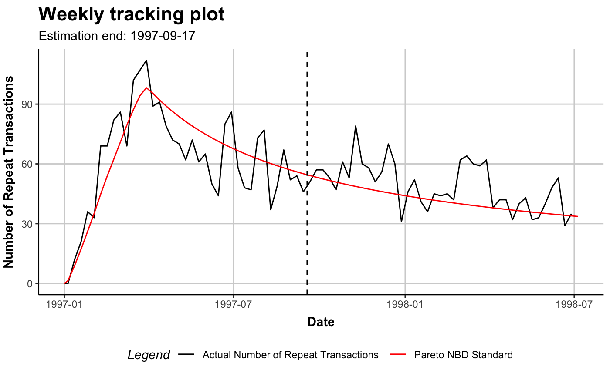
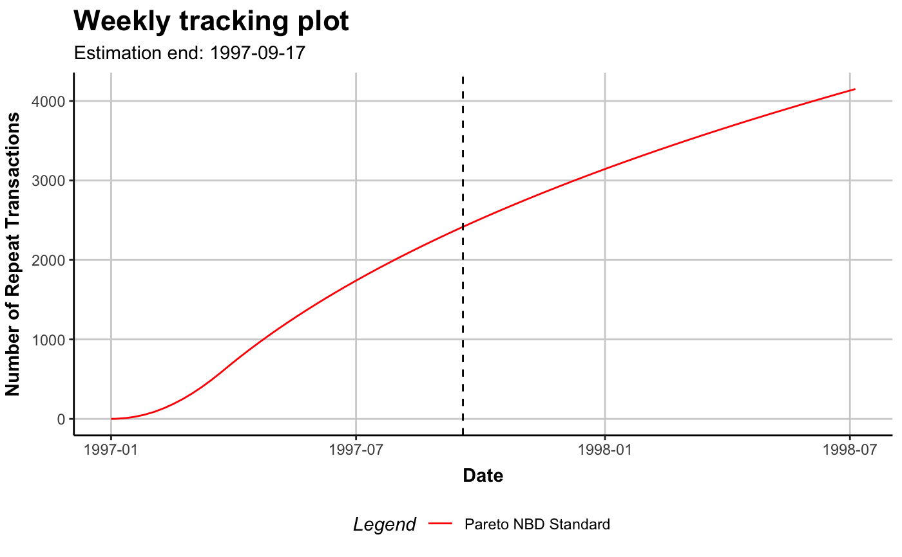
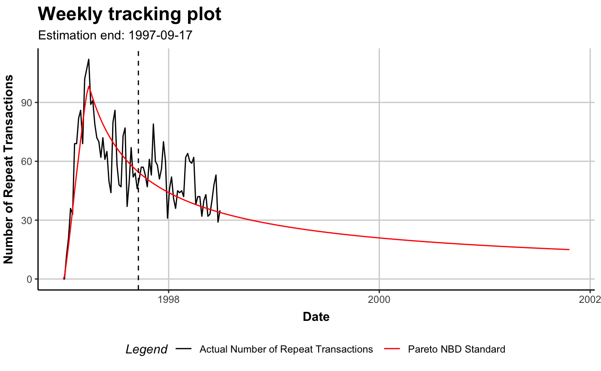
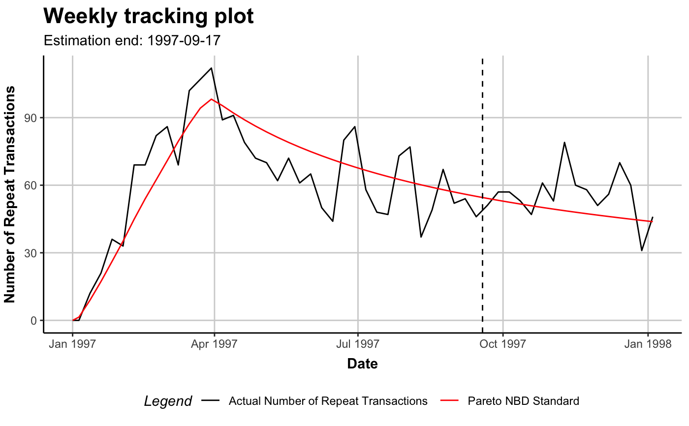
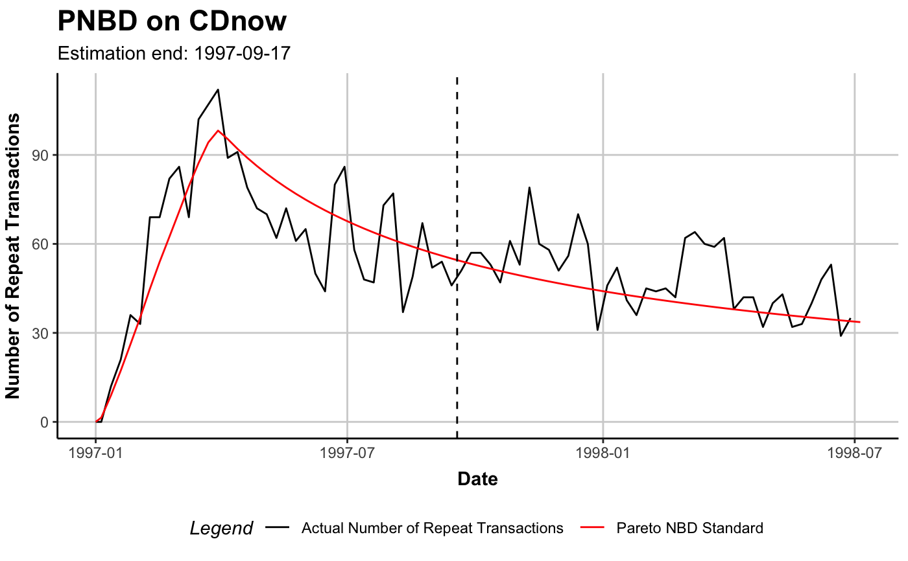

R/f_s3generics_clvfitted_plot.R
plot.clv.fitted.RdPlot the actual repeat transactions and overlay it with the repeat transaction as predicted by the fitted model (unconditional expectation).
# S3 method for clv.fitted plot( x, prediction.end = NULL, newdata = NULL, cumulative = FALSE, transactions = TRUE, label = NULL, plot = TRUE, verbose = TRUE, ... ) # S4 method for clv.fitted plot( x, prediction.end = NULL, newdata = NULL, cumulative = FALSE, transactions = TRUE, label = NULL, plot = TRUE, verbose = TRUE, ... )
| x | The fitted clv model to plot |
|---|---|
| prediction.end | Until what point in time to predict. This can be the number of periods (numeric) or a form of date/time object. See details. |
| newdata | An object of class clv.data for which the plotting should be made with the fitted model. If none or NULL is given, the plot is made for the data on which the model was fit. |
| cumulative | Whether the cumulative expected (and actual) transactions should be plotted. |
| transactions | Whether the actual observed repeat transactions should be plotted. |
| label | Character string to label the model in the legend |
| plot | Whether a plot should be created or only the assembled data is returned. |
| verbose | Show details about the running of the function. |
| ... | Ignored |
An object of class ggplot from package ggplot2 is returned by default.
If the parameter plot is FALSE, the data that would have been melted and used to
create the plot is returned. It is a data.table which contains the following columns:
The timepoint that marks the end (up until and including) of the period to which the data in this row refers.
The number of actual repeat transactions in
the period that ends at period.until. Only if transactions is TRUE.
The value of the unconditional expectation for the period that ends on period.until.
prediction.end indicates until when to predict or plot and can be given as either
a point in time (of class Date, POSIXct, or character) or the number of periods.
If prediction.end is of class character, the date/time format set when creating the data object is used for parsing.
If prediction.end is the number of periods, the end of the fitting period serves as the reference point
from which periods are counted. Only full periods may be specified.
If prediction.end is omitted or NULL, it defaults to the end of the holdout period if present and to the
end of the estimation period otherwise.
The first prediction period is defined to start right after the end of the estimation period.
If for example weekly time units are used and the estimation period ends on Sunday 2019-01-01, then the first day
of the first prediction period is Monday 2019-01-02. Each prediction period includes a total of 7 days and
the first prediction period therefore will end on, and include, Sunday 2019-01-08. Subsequent prediction periods
again start on Mondays and end on Sundays.
If prediction.end indicates a timepoint on which to end, this timepoint is included in the prediction period.
Note that only whole periods can be plotted and that the prediction end might not exactly match prediction.end.
See the Note section for more details.
The newdata argument has to be a clv data object of the exact same class as the data object
on which the model was fit. In case the model was fit with covariates, newdata needs to contain identically
named covariate data.
The use case for newdata is mainly two-fold: First, to estimate model parameters only on a
sample of the data and then use the fitted model object to predict or plot for the full data set provided through newdata.
Second, for models with dynamic covariates, to provide a clv data object with longer covariates than contained in the data
on which the model was estimated what allows to predict or plot further. When providing newdata, some models
might require additional steps that can significantly increase runtime.
Because the unconditional expectation for a period is derived as the difference of the cumulative expectations calculated at the beginning and at end of the period, all timepoints for which the expectation is calculated are required to be spaced exactly 1 time unit apart.
If prediction.end does not coincide with the start of a time unit, the last timepoint
for which the expectation is calculated and plotted therefore is not prediction.end
but the start of the first time unit after prediction.end.
# \donttest{ data("cdnow") # Fit ParetoNBD model on the CDnow data pnbd.cdnow <- pnbd(clvdata(cdnow, time.unit="w", estimation.split=37, date.format="ymd"))#>#># Plot actual repeat transaction, overlayed with the # expected repeat transactions as by the fitted model plot(pnbd.cdnow)#># Plot cumulative expected transactions of only the model plot(pnbd.cdnow, cumulative=TRUE, transactions=FALSE)#>#>#>#>#> Warning: Not plotting full holdout period.# Save the data generated for plotting # (period, actual transactions, expected transactions) plot.out <- plot(pnbd.cdnow, prediction.end = 15)#>#> Warning: Not plotting full holdout period.# A ggplot object is returned that can be further tweaked library("ggplot2") gg.pnbd.cdnow <- plot(pnbd.cdnow)#># }